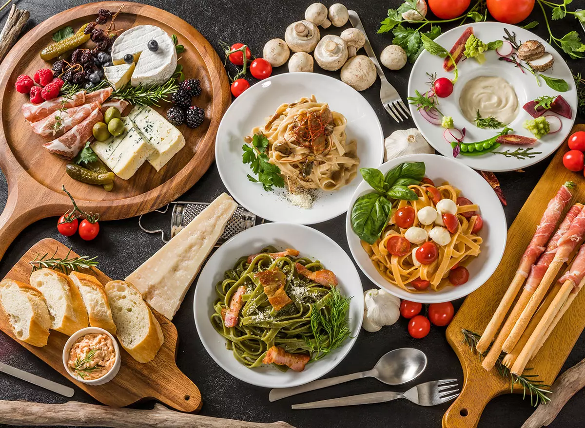
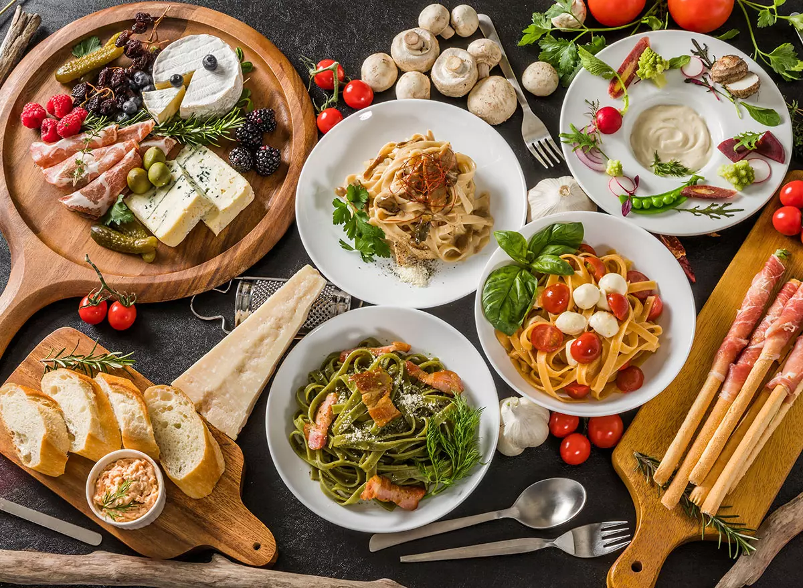

WELCOME TO FOOD WORLD
WELCOME TO FOOD WORLD
 

Indian cuisine is a vibrant tapestry of flavors, rich with aromatic spices and diverse ingredients. Each region offers its own unique dishes, from the creamy curries of the north to the tangy, coconut-infused dishes of the south. Street food like chaat and samosas bring bold tastes and textures to life. Vegetarian options are abundant, making it a haven for plant-based eaters. Indian food is more than just a meal—it's a celebration of culture, tradition, and community.
Chinese cuisine is a vibrant tapestry of flavors, rich with aromatic spices and diverse ingredients. Each region offers its own unique dishes, from the creamy curries of the north to the tangy, coconut-infused dishes of the south. Street food like chaat and samosas bring bold tastes and textures to life. Vegetarian options are abundant, making it a haven for plant-based eaters. Indian food is more than just a meal—it's a celebration of culture, tradition, and community.
Italian cuisine is a vibrant tapestry of flavors, rich with aromatic spices and diverse ingredients. Each region offers its own unique dishes, from the creamy curries of the north to the tangy, coconut-infused dishes of the south. Street food like chaat and samosas bring bold tastes and textures to life. Vegetarian options are abundant, making it a haven for plant-based eaters. Indian food is more than just a meal—it's a celebration of culture, tradition, and community.

Spanish cuisine is a vibrant tapestry of flavors, rich with aromatic spices and diverse ingredients. Each region offers its own unique dishes, from the creamy curries of the north to the tangy, coconut-infused dishes of the south. Street food like chaat and samosas bring bold tastes and textures to life. Vegetarian options are abundant, making it a haven for plant-based eaters. Indian food is more than just a meal—it's a celebration of culture, tradition, and community.
Thai cuisine is a vibrant tapestry of flavors, rich with aromatic spices and diverse ingredients. Each region offers its own unique dishes, from the creamy curries of the north to the tangy, coconut-infused dishes of the south. Street food like chaat and samosas bring bold tastes and textures to life. Vegetarian options are abundant, making it a haven for plant-based eaters. Indian food is more than just a meal—it's a celebration of culture, tradition, and community.
American cuisine is a vibrant tapestry of flavors, rich with aromatic spices and diverse ingredients. Each region offers its own unique dishes, from the creamy curries of the north to the tangy, coconut-infused dishes of the south. Street food like chaat and samosas bring bold tastes and textures to life. Vegetarian options are abundant, making it a haven for plant-based eaters. Indian food is more than just a meal—it's a celebration of culture, tradition, and community.
Our Team will reach out to you ASAP!